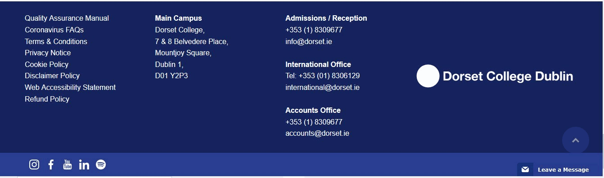

Learning Goals
At the end of this Tutorial, you will be able to:
- Understand the differences between a wireframe and a prototype, as those terms are used in front-end design.
- Recognise and name the main visual elements of a typical web page.
- Recognise the visual characteristics designers use to create a visual hierarchy of web page content.
- List and describe the main semantic tags introduced with HTML5 and CSS3.
Wireframes and prototypes
In web design, creating a wireframe is commonly the first step in developing a user interface for a web project. Their purpose is to establish the basic structure of a page before coding begins.
Wireframes are referred to as low-fidelity, as they are just rough sketches often drawn by hand.

A number of software products exist to support the creation and sharing of wireframes. One such as BalsamicIQ.
In contrast, a prototype is a high-fidelity mockup of a web page. Typically, it contains various assets such as images and videos, final text, and 'clickable' interactive elements such as buttons and forms.
Here are some popular software products that offer drag & drop interfaces for working with the building blocks of a user interface.
Elements of a web page
The following slideshow lists and describes the main elements of a typical web page.
Web page elementsAbout the visual hierarchy
Visual hierarchy is the principle of arranging elements to show their order of importance.

Designers show the importance of a web page's contents by manipulating these characteristics:
- Size – Users notice larger elements more easily.
- Colour – Bright colors typically attract more attention than muted ones.
- Contrast – Dramatically contrasting colors are more eye-catching.
- Alignment – Out-of-alignment elements stand out over aligned ones.
- Repetition – Repeating styles can suggest content is related.
- Proximity – Closely placed elements seem related.
- Whitespace – More space around elements draws the eye towards them.
- Texture and Style – Richer textures stand out over flat ones.

Semantic web design
So-called semantic web layout means using a set of tags released with HTML5 and CSS3 to structure the contents of a web page.
Unlike 'traditional' tags such as h1 and p, semantic tags have no default style values. For example, they do not change the size, appearance of space around text.
The purpose of semantic tags is not to style web page content but to structure or organise it into 'boxes.' The three major semantic tags are listed below.
- nav
- header
- main
- footer
All four tags are placed within the <body> ... </body> of a web page.

The <nav> tag
This is intended to hold navigation elements. It is most commonly used to contain the menu of hyperlinks at the top of a web page.
The <header> tag
This is generally positioned under the <nav> element at the top of a web page, and usually contains the main heading and some introductory text.

The <main> tag
This is intended to hold the primary content of a web page. In simple terms, this means any content is that should not be in the <nav>, <header> or <footer> elements.
The <footer> tag
Typically located at the bottom of a web page, this contains such content as the organsation's details, legal information, and links to related web pages.
Two further tags you will frequently see are the following:
- <article>: This represents a self-contained part of web page that would make sense if it was independently distributed outside of the page. Examples include: a forum post, a magazine or newspaper article, a blog entry, a product description, or an interactive widget.
- <section>: This represents a stand-alone part of a web page. Sections should always have a heading, with very few exceptions.
uk-kit web page builder